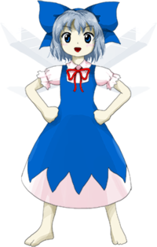

Who the hell is Cirno?
| 
|
Cirno (チルノ Chiruno) is an ice fairy who first appeared on the second stage of Embodiment of Scarlet Devil.
As a fairy, she is exceptionally strong for her kind, matching the power of some weak youkai. However,
compared to most of Gensokyo's residents, she's quite weak. Her personality is childish and she is sometimes
considered idiotic by other characters. She stars as the main protagonist of Fairy Wars, and one of several protagonists
in Touhou Hisoutensoku and Hidden Star in Four Seasons.
|
|
Cirno is a childish, confident fairy who appears to have a superiority complex in regards to others.
She proclaims herself to be "the strongest" on three separate occasions in Phantasmagoria of Flower View.
In the game's manual, she is labeled as "9. baka" (⑨. バカ, lit. "9. Idiot") in an explanation of the game screen's layout.
She was again labeled as such in the manual for Touhou Hisoutensoku. This implies that Cirno may be some kind of idiot,
which does seem to be the case on some occasions - in Oriental Sacred Place, she is quite confused as to why nobody wants
to buy her water-flavored shaved ice. Despite this, she is smart enough to know when she is in deep trouble,
such as her battle against Yuuka in Phantasmagoria of Flower View's story mode. She can also read,
unlike some of her peers, such as Mystia Lorelei. She can also count (she shows knowledge of rounding
and fractions in Fairy Wars). Among other things, she enjoys using her abilities to freeze frogs,
then watch them revive while thawing out in the water. However, about one in every three attempts fails,
shattering the frog to pieces.
|
|
Cirno has the ability to manipulate cold to the point of being able to freeze water. However,
even while saying "manipulate", when coldness is in an omitted state, it seems like her surroundings
are chilly even in summer. In battle, she uses this ability to attack others with icicles, huge ice cubes,
or wieldable weapons like swords, but also to freeze her opponents or their danmaku.[2][3] However,
despite being able to freeze something hot like flaming danmaku, she is unable to freeze lasers.
How she exactly manipulates cold is unclear, but Reisen Udongein Inaba, in one of her quotes in Touhou Hisoutensoku,
speculates that when Cirno does it, she warms up inside as a result. This would mean that she just absorbs the heat
in the surroundings instead of "creating" cold from nothing.
|